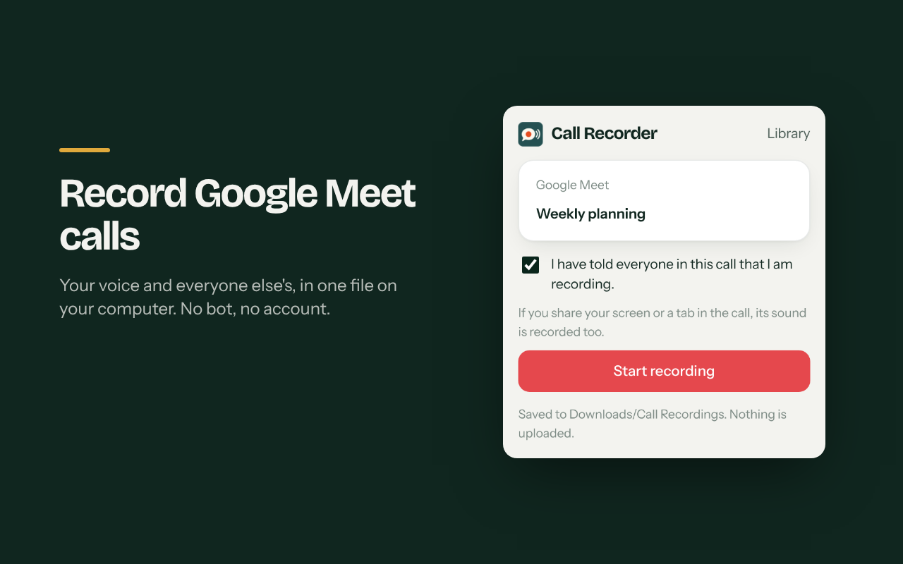
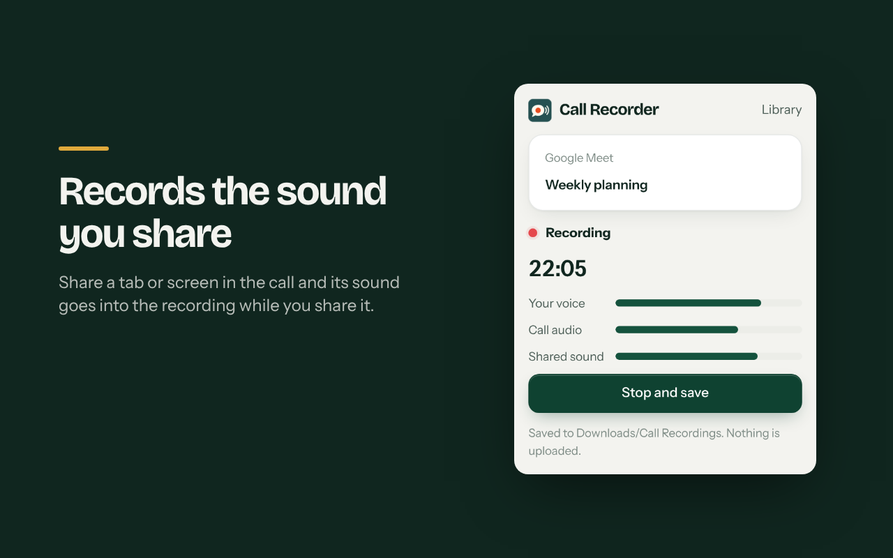

Record Google Meet calls. Zero cost.
A free Chrome extension that saves the call, your microphone and the sound you share to one file on your own computer. No account, no bot, no per-minute fees, nothing uploaded.
Free and open source (AGPL-3.0).
See it work in 30 seconds
The YouTube clip shown in the demo is not ours. It appears only to demonstrate recording shared sound.
Call recording that costs nothing
Free, for real
No subscription, no free trial, no recording limit. Open source, so you can read every line.
No bot in the call
It records from your own browser tab. Nobody sees an extra participant.
Nothing leaves your computer
No server, no account, no analytics. The file goes to your Downloads folder or a folder you pick.
Your voice and the sound you share
Everyone's voices, your microphone and the sound of a tab or screen you share, in one file.
How it looks


Questions
How do I record a Google Meet call? Open the call tab, click the extension, confirm you told everyone, and press Start. Press Stop and save when you are done.
Is it really free? Yes. There is no paid plan. It is open source under AGPL-3.0.
Does it upload my calls? No. Recordings are saved on your computer and nowhere else. Read the privacy policy.
Is it legal? Many places need everyone's consent to record a call. The extension asks you to confirm before it starts. The responsibility is yours.